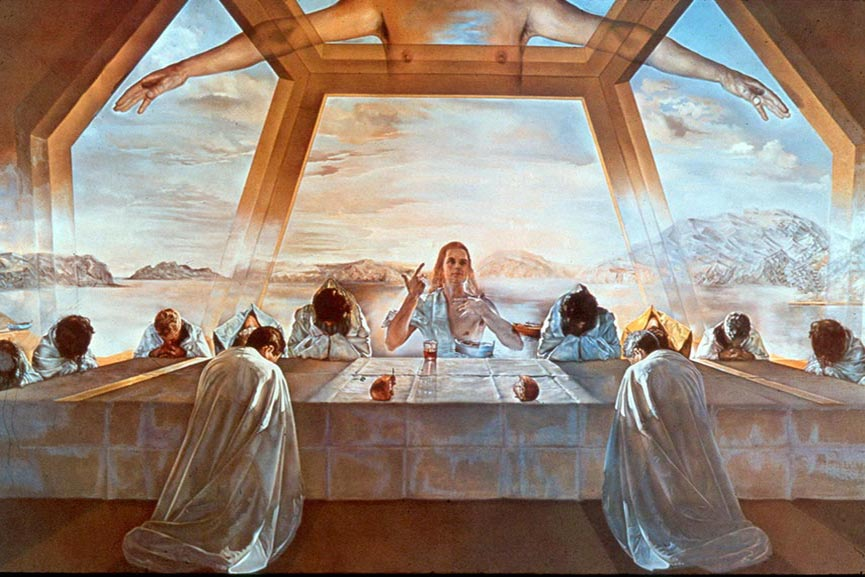

Salvador Dali – The Sacrament of the Last Supper

The Surrealist painter, Salvador Dali, famous for his paintings that depict the dream-like worlds of our subconscious,
in his painting The Sacrament of the Last Supper, displayed his knowledge about the golden ration.
Taking inspiration from Leonardo Da Vinci, Dali positioned the table exactly at the golden section of the height of his painting.
His entire painting is in fact framed in a golden rectangle and he didn’t stop there. The positioning of the two disciples at Christ’s side,
Dali placed at the golden sections of the width of the composition. The extensive use of the golden ratio,
showcases the artist’s need to not only create the image that is in a perfect balance,
but also that is the most pleasing to the public’s eye.